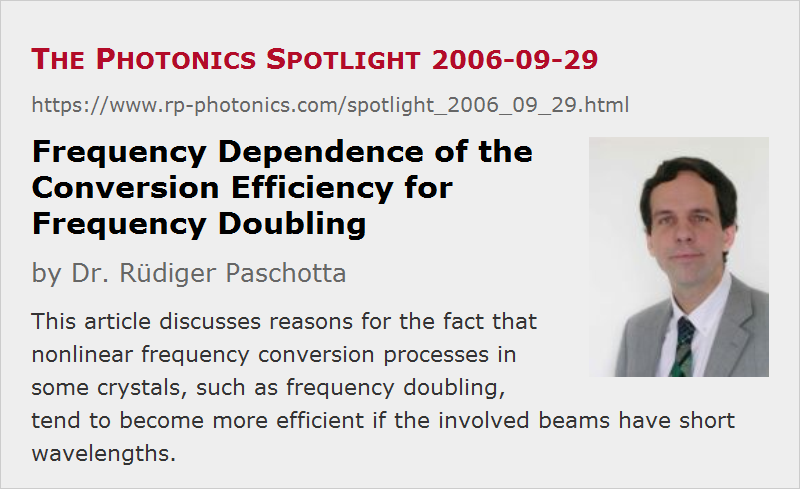

Frequency Dependence of the Conversion Efficiency for Frequency Doubling
Posted on 2006-09-29 as a part of the Photonics Spotlight (available as e-mail newsletter!)
Permanent link: https://www.rp-photonics.com/spotlight_2006_09_29.html
Author: Dr. Rüdiger Paschotta, RP Photonics Consulting GmbH
Abstract: This article discusses reasons for the fact that nonlinear frequency conversion processes in some crystals, such as frequency doubling, tend to become more efficient if the involved beams have short wavelengths.

Ref.: G. D. Boyd and D. A. Kleinman, “Parametric interaction of focused Gaussian light beams”, J. Appl. Phys. 39 (8), 3597 (1968); encyclopedia articles on nonlinear frequency conversion, frequency doubling, etc.
Did you know why the conversion efficiency for frequency doubling (second-harmonic generation) in a nonlinear crystal has a strong dependence on the pump wavelength? To a minor extent, this is a consequence of the frequency dependence of the nonlinear tensor and the refractive index. In most cases it is more important that common equations for estimating the conversion efficiency contain a factor ω\p2 or even ω\p3, where ω\p is the angular optical frequency of the pump wave. Let's consider the origins of that.
To begin with, the pump field generates a nonlinear polarization, the magnitude of which is proportional to the square of the electric field strength of the pump, and thus proportional to the pump intensity. Here we see no explicit frequency dependence. However, the power radiated by an oscillating electric dipole scales with the square of the oscillation frequency, and the same holds for the harmonic field radiated by the nonlinear polarization. So we have found a factor ω\p2.
But why is there sometimes another factor ω\p? This occurs only in equations which are based on the assumption that the pump wave is a Gaussian beam, which is optimally focused into the nonlinear crystal. This means that the beam radius at the beam waist (typically in the middle of the crystal) is small to obtain high intensities, but not too small, because that would lead to strong beam divergence, reducing the intensity near the end faces. There are actually also some more subtle details involved, related to the Gouy phase shift and discussed in the famous paper of Boyd and Kleinman (see above), but we don't need to consider those. We simply have to realize that a beam with higher frequency has a shorter wavelength and can thus be better focused to a small spot. This just gives another factor of ω\p for the conversion efficiency.
A similar frequency dependence is observed for other processes of nonlinear frequency conversion, even though the situation is a bit more complicated e.g. for non-degenerate optical parametric oscillators where waves with three different frequencies are involved.
The discussed results seem to suggest that nonlinear frequency conversion to very long wavelengths, e.g. in the mid-infrared spectral region, is very hard. However, this is not always so. Nonlinear crystals for such wavelength regions sometimes have a very high nonlinearity. An example is gallium arsenide, which can nowadays be quasi-phase-matched by orientation patterning. Its nonlinearity is much stronger than that of basically all nonlinear crystals which are usually used in the near infrared or visible spectral range.
This article is a posting of the Photonics Spotlight, authored by Dr. Rüdiger Paschotta. You may link to this page and cite it, because its location is permanent. See also the RP Photonics Encyclopedia.
Note that you can also receive the articles in the form of a newsletter or with an RSS feed.
Questions and Comments from Users
Here you can submit questions and comments. As far as they get accepted by the author, they will appear above this paragraph together with the author’s answer. The author will decide on acceptance based on certain criteria. Essentially, the issue must be of sufficiently broad interest.
Please do not enter personal data here; we would otherwise delete it soon. (See also our privacy declaration.) If you wish to receive personal feedback or consultancy from the author, please contact him e.g. via e-mail.
By submitting the information, you give your consent to the potential publication of your inputs on our website according to our rules. (If you later retract your consent, we will delete those inputs.) As your inputs are first reviewed by the author, they may be published with some delay.
|  |
If you like this page, please share the link with your friends and colleagues, e.g. via social media:
These sharing buttons are implemented in a privacy-friendly way!